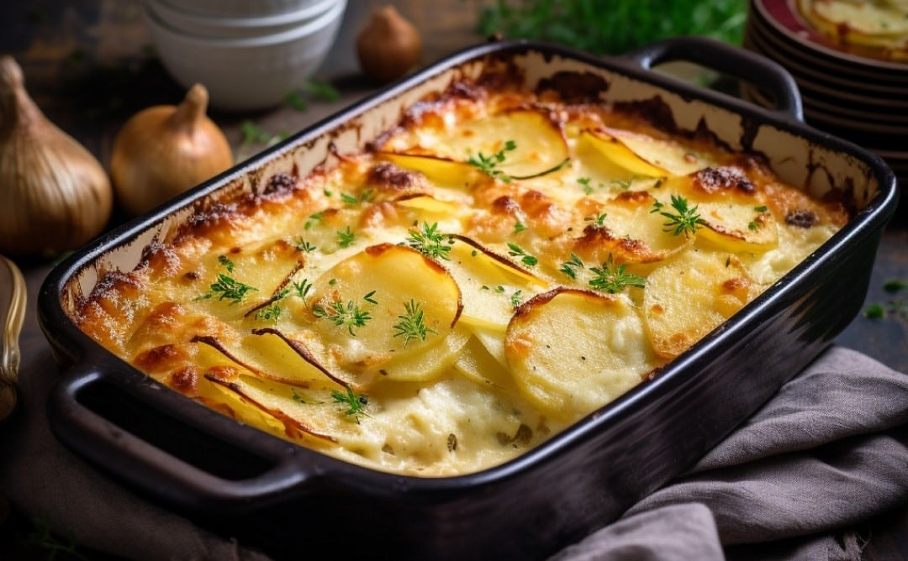

Home
Gratin dauphinois

Au gratin style potatoes, irresistible...
The creamy sauce and tender potatoes in this classic French dish make a delicious flavor combination. The choice of potatoes plays a role in the taste and firmness of the dish.
You will need an oven to cook this dish !
Ingredients for 6
- 500g of fresh cream
- 50cl of milk
- 1kg of potatoes
- 1 clove of garlic
- Nutmeg spice
- Pepper
- Salt
Steps
- Preheat the oven to 200°C (thermostat 6-7).
- In a large saucepan, heat the cream, milk, garlic clove cut into thin slices, a pinch of nutmeg, salt and pepper.
- While it's heating, peel and cut the potatoes into thin slices.
- Take a look at your cream-milk mixture, as soon as it simmers: turn off the heat and let it infuse.
- Butter a gratin dish.
- Spread the potatoes in the baking dish, taking care to salt the potatoes in each layer (not too much: the milk-cream mixture is already salty).
- Cover with your cream-milk mixture, you can remove the pieces of garlic or leave them (as you wish) and put in the oven.
- Let cook for 35 to 45 minutes, cooking time varies depending on the variety of potatoes used.
- Remove your gratin from the oven and let it rest for about ten minutes before serving.